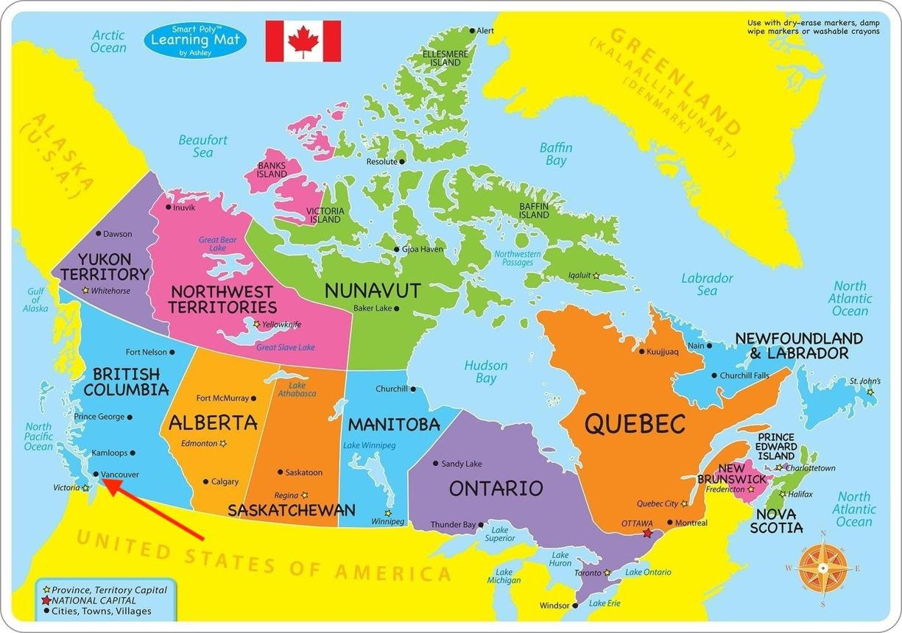

👋 Welcome!
Tap a province or territory on the map. You can also tap the Canada flag to learn about Canada.
Let’s Learn About Canada!
Step 1 of 2This Canada lesson covers the capital city, 10 provinces, 3 territories, population, official languages, geography, Canadian regions, wildlife, foods, Indigenous Peoples and cultures, major cities, and a quick review.
Let’s Learn About Canada!
Step 1 of 2🎉 YOU DID IT!
You finished your region adventure.
You explored, listened, watched, and tried some questions.
🎉 YOU DID IT!
You finished your Canada adventure.
You explored, listened, watched, and tried some questions.
🌲 Let's Learn About British Columbia!
Step 1 of 2This B.C. lesson uses real photographs plus several real video clips. It covers geography, climate, cities, wildlife, Indigenous Peoples and cultures, food and industries, history, and a quick review. It is designed as a learning lesson rather than a province-name song.
🎉 B.C. ADVENTURE COMPLETE!
You explored British Columbia.
You learned about its geography, wildlife, people and culture.
🍁 My Canada Journey
Positive ProgressThere are no grades or scores here. This page simply remembers what you have explored.
💬 My Notes
Add a thought about Canada. You can type or use your voice.